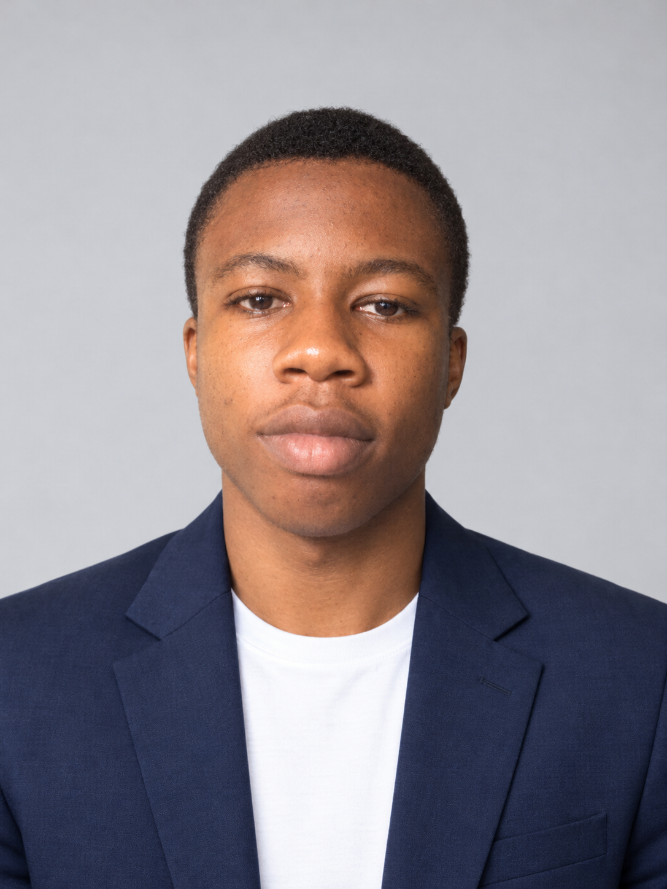

HTML
Building the structure and content of web pages.
LEARNING IN PROGRESS
PERSONAL PORTFOLIO 2026
Curious mind. Creative energy.
Always building what's next.
Welcome to my corner of the internet — a space for my interests, ideas, and the projects I create along the way.
01 / THE PERSON

I'm building my path, exploring technology, and learning by doing. I believe every great skill starts with curiosity — and every big project starts with a first step.
This portfolio is my digital base: a place to share what I learn, show what I make, and keep improving over time.
02 / MY LOADOUT
The toolkit grows one experiment at a time.
Building the structure and content of web pages.
Creating layouts, colors, responsive designs, and visual style.
Exploring how code can make websites interactive.
Interested in digital tools, gaming, and how things work.
03 / SELECTED MISSIONS
A portfolio gets stronger with every project.
WEB DESIGN / HTML + CSS
A place to document your first steps in web development.
Project details ↗CREATIVE / EXPERIMENT
A small experiment to try a new design idea or coding technique.
Project details ↗04 / OPEN CHANNEL
Have an idea, a question, or want to connect? Add your preferred contact links below.
Email me ↗